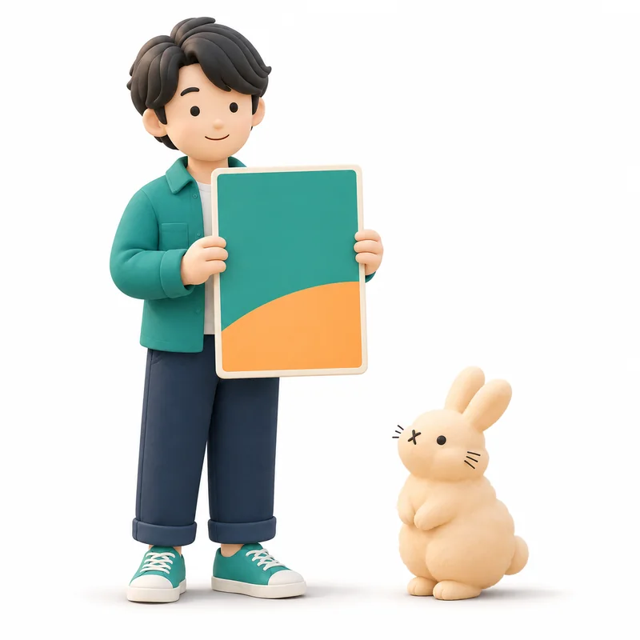
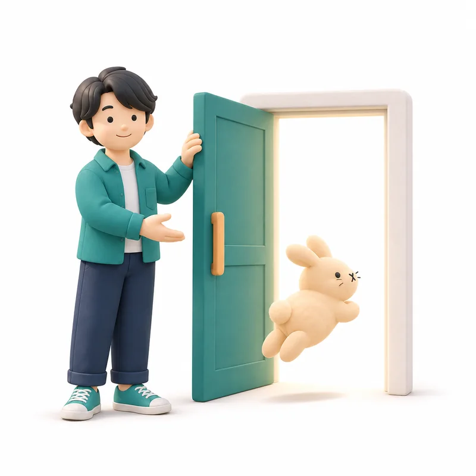
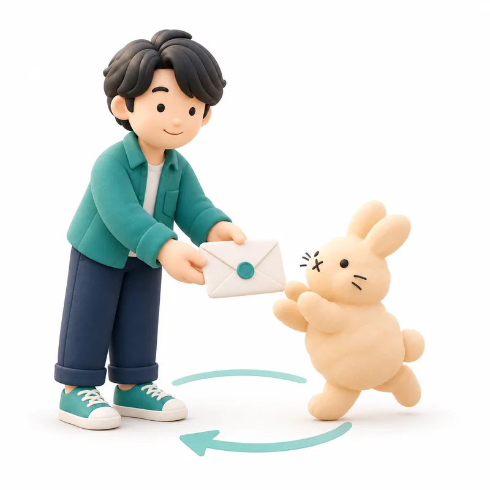
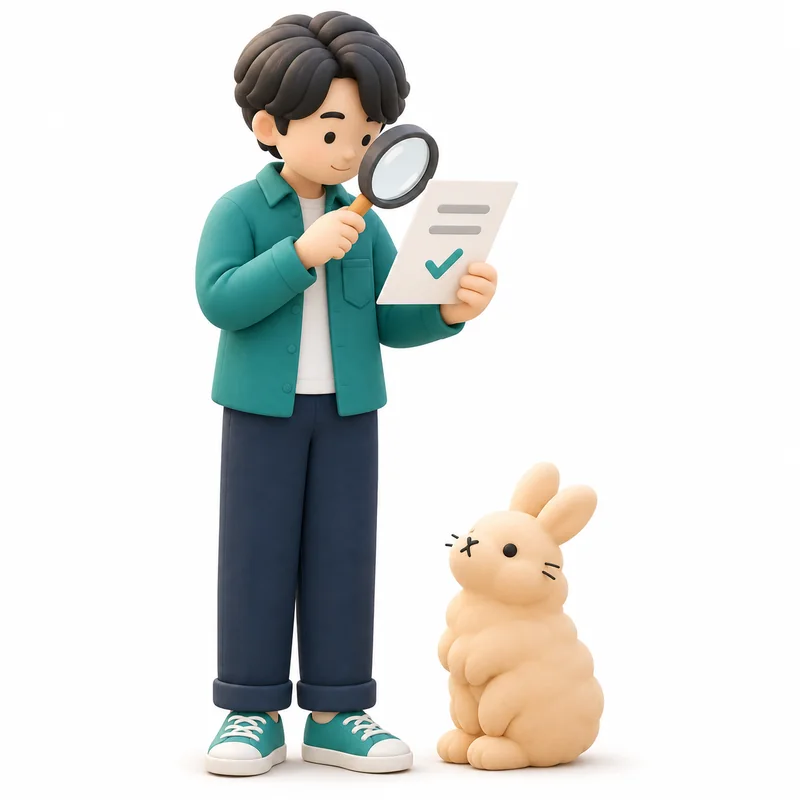
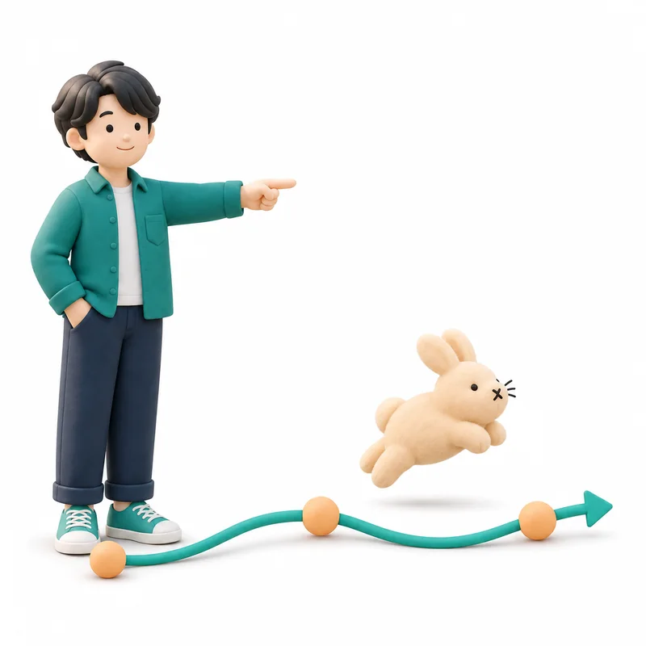
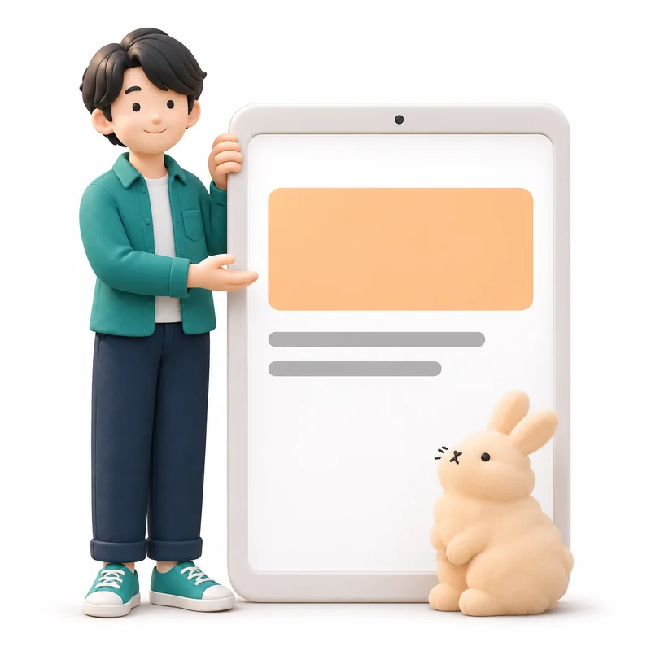
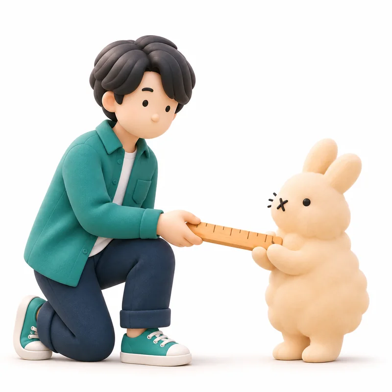
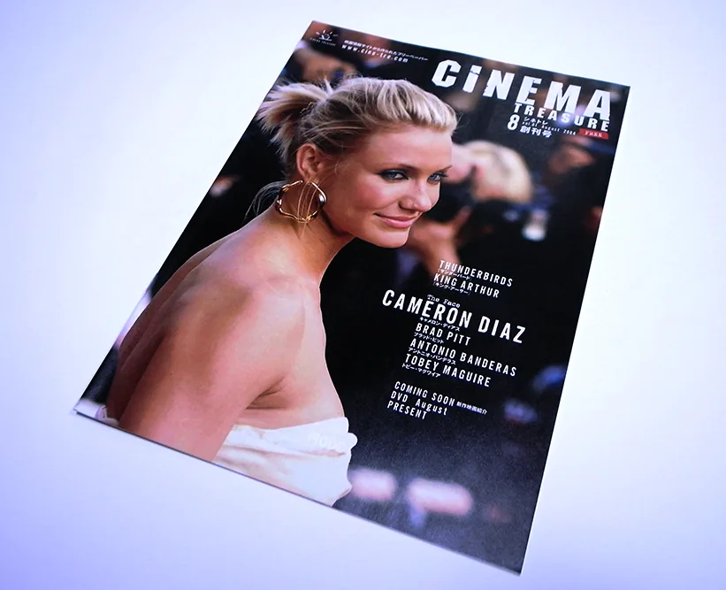
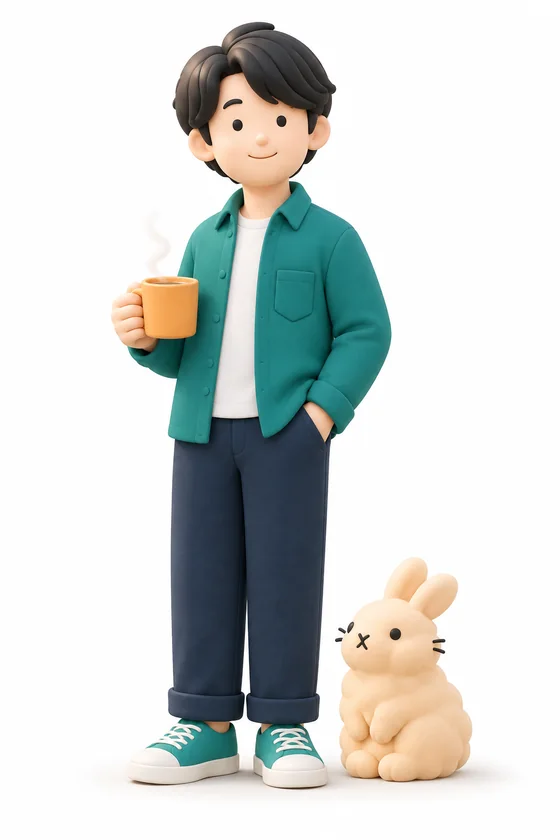

AIでつくる、
お客さんが
立ち寄るしかけ。
ホームページ、LP、SNS。
お客さんが足を止める入口を、
AIと、30年のデザインの目でつくります。

DESIGN LAB 01
中身は同じでも、最初の1画面で「何の医院か」「どんな良さがあるか」が伝わるかどうかで、
立ち寄る人は変わります。


ABOUT
ホームページを開いた人も、SNSを流し見する人も、足を止めるのは一瞬です。
その一瞬に、何を見せて、何を削るか。
Drop. は、AIの速さと、30年つづけてきたデザインの判断を組み合わせて、小さな会社の集客を手伝っています。
お客さんが思わず立ち寄る「しかけ」を、いっしょにつくります。

SNSの投稿・バナー・サムネイル。AIで何案も試して、最初の1秒で「自分に関係がある」と分かる1枚を選びます。

ホームページ・LP。迷わず最後まで読める順番に、情報を並べ直します。

メール・SNSの発信。AIで続けやすい型をつくり、思い出してもらえる回数を増やします。
WHAT I CAN DO
入口づくりで、頼めること。
作るところから、直すところ、社内に残すところまで。
AIの道具を自分で組んで、30年のデザインの目で仕上げます。
SAMPLE
架空のお店を想定してつくった LP・HP のサンプルです。
押すと、ページ全体を見られます。
SERVICE
いきなり作りはじめず、まず見立てます。
直す場所をまちがえないための、いちばん近い道です。

いまのホームページやチラシを見て、どこで素通りされているかを出します。診断は3日ほど。

誰に、何を、どの順で見せるか。構成を選んでもらってから、つくりはじめます。

AIで素早く形にして、デザイナーの目で仕上げます。LPは3日、ホームページは1週間から。

公開して終わりにしません。直し方や続け方を、社内で使える形にして渡します。
ご相談は、無料メールに登録のうえ、届いたメールにそのまま返信してください。Drop. が直接お返事します。
SELECTED WORKS
タブロイド誌、周年記念パンフレット、自治体の広報誌、ポスター、雑誌まで。




CLIENTS
スターティアホールディングス／サイクラーズグループ／三重県東員町／YAMATO Hotel&Residence／ラティス・テクノロジー／coco／NEC／Asahi／U-NEXT／DHC （順不同・敬称略）
PROFILE

Drop.グラフィックデザイナー／アートディレクター
デザイン会社で雑誌や広告のデザインを担当したのち、2008年に独立して「Drop.」を始めました。デザイン歴は30年を超えます。
会社案内、パンフレット、雑誌、書籍、ロゴ。紙でつづけてきた編集とデザインの判断に、いまはAIを組み合わせて、小さな会社の発信を手伝っています。相棒は、うさぎです。
LETTERS
デザインとAIの、すぐ試せる話をメールで届けます。読むだけでも、相談の入口としても。
先着10名
ホームページの無料診断
登録すると届くメールから申し込めます。あなたのサイトのトップページを Drop. が見て、直すと効くところを診断書にしてお返しします。
配信は Substack を使っています。いつでも解除できます。